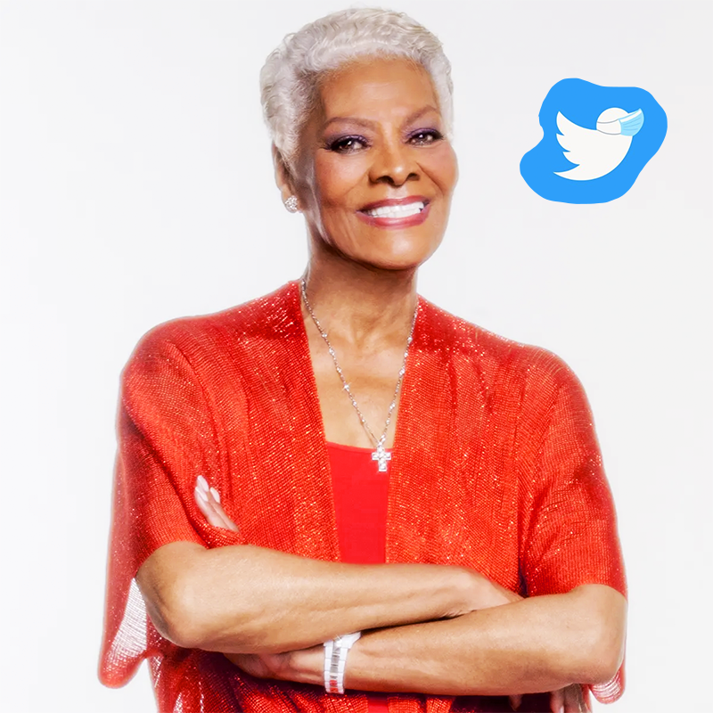

Miss Dionne created a Twitter account that brought much-needed joy to fans all over the world in late 2020.
Dionne Warwick, legendary singer, began posting on Twitter in late 2020. Her account following exploded shortly after she tweeted messages to Snoop Dogg, Chance the Rapper, and the Weeknd. Chance and the Weeknd noticed and replied most expediously, while Snoop took a few days to get with it and notice. Dionne brought smiles to her fans, demonstrating her wit and understanding of a good reply gif. 2020 may have been a bleak, depressing year of pain, loss, and hardship, but Dionne brought a little sparkle and love to the Twitter platform this same year. Thank you, Miss Dionne Warwick.
Visit Dionne Warwick's Twitter here